Example contrasts
1.1 Introduction
We will consider examples that appear to be similar but then differ in some way, or looked at from the opposite perspective, examples that differ in some way but turn out to be the same in other respects. Such contrasts can heighten our sensitivity to how things work.
1.2 Differing preposition phrase attachments
Let's start by considering examples with a similar surface string, but different syntactic tree form and different semantic dependency structure. Examples of this section are from B. Levin (1993, p.114).
- (1.1)
-
I[PRO] lifted[VBD;~Tn.pr] the[D] book[N] onto[P-ROLE] the[D] table[N] .[PUNC]
- (1.2)
-

- (1.3)
-
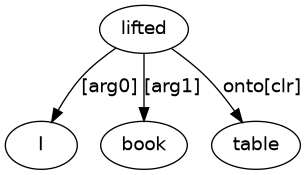
- (1.4)
-
I[PRO] lifted[VBD;~Tn] the[D] book[N] on[P-ROLE] the[D] table[N] .[PUNC]
- (1.5)
-
- (1.6)
-
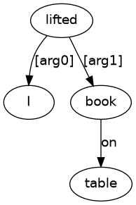
If we focus our attention on the words, then examples (1.1) and (1.4) vary only with respect to the choice of:
These words both share the same word class, namely P-ROLE (preposition), so there is no difference with respect to word class. But this choice of a particular preposition does have an analysis consequence: It influences the choice of verb code for the instances of lifted:
It is this difference in verb code that guides the parser to create the different parse structures of (1.2) and (1.5), which then leads to the different semantic dependencies of (1.3) and (1.6).
1.3 Differing role contributions
Examples of this section are from B. Levin (1993, p.46).
- (1.7)
-
Bill[NPR] sent[VBD;~Dpr.n] a[D] package[N] to[P-ROLE] Tom[NPR] .[PUNC]
- (1.8)
-
- (1.9)
-

- (1.10)
-
Bill[NPR] sent[VBD;~Tn.pr] a[D] package[N] to[P-ROLE] London[NPR] .[PUNC]
- (1.11)
-

- (1.12)
-
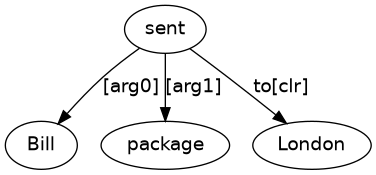
- (1.13)
-
Bill[NPR] sent[VBD;~Dn.n] Tom[NPR] a[D] package[N] .[PUNC]
- (1.14)
-
- (1.15)
-
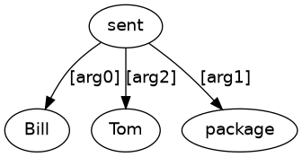
- (1.16)
-
Bill[NPR] sent[VBD;~Tn] London[NPR] a[D] package[N] .[PUNC]
If we focus our attention on the words, then the examples vary only with respect to the choice of:
These words both share the same word class, namely NPR (proper name), so there is no difference with respect to word class between (1.7) and (1.10) and between (1.13) and (1.16). But this choice of a particular proper name and the reference that underlies the name (a person for John, a city for London) does have an analysis consequence: It determines the choice of verb code for the instances of sent:
These differences in verb codes guide the parser into creating the different parse structures seen with (1.8), (1.11) and (1.14) above, which leads to the different semantic dependencies seen with (1.9), (1.12) and (1.15) above. But note that there is no parse at all for (1.16) and so there can be no semantic dependency analysis either.
1.4 Tf and Tnt
The examples of this section illustrate different syntactic forms that lead to the same semantic dependency analysis. Examples of this section are from Stockwell, Schschter and Partee (1973, p.561).
- (1.17)
-
They[PRO] thought[VBD;~Tf] that[C] he[PRO] was[BED;~La] intelligent[ADJ] .[PUNC]
- (1.18)
-
- (1.19)
-
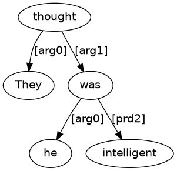
- (1.20)
-
They[PRO] thought[VBD;~Tnt] him[PRO] to[TO] be[BE;~La] intelligent[ADJ] .[PUNC]
- (1.21)
-
- (1.22)
-
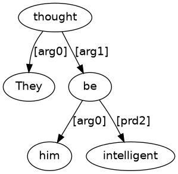
- (1.23)
-
It[PRO;_provisional_] was[BED;~cat_Ve_passive_] thought[VVN;~Tn] that[C] he[PRO] was[BED;~La] intelligent[ADJ] .[PUNC]
- (1.24)
-
- (1.25)
-
- (1.26)
-
He[PRO] was[BED;~cat_Ve_passive_] thought[VVN;~Tnt] to[TO] be[BE;~La] intelligent[ADJ] .[PUNC]
- (1.27)
-
- (1.28)
-
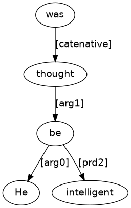
1.5 Tnt and Dn.t and Cn.t
The examples of this section illustrate similar surface words that lead to similar syntactic forms that lead to different semantic dependency analysis.
- (1.29)
-
I[PRO] want[VBP;~Tnt] Andrew[NPR] to[TO] have[HV;~Tn] a[D] go[N] .[PUNC]
- (1.30)
-
- (1.31)
-
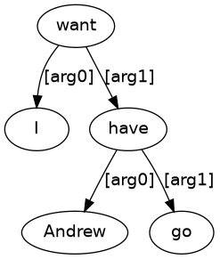
- (1.32)
-
I[PRO] asked[VBD;~Dn.t] Andrew[NPR] to[TO] have[HV;~Tn] a[D] go[N] .[PUNC]
- (1.33)
-
- (1.34)
-
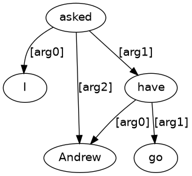
- (1.35)
-
I[PRO] persuaded[VBD;~Cn.t] Andrew[NPR] to[TO] have[HV;~Tn] a[D] go[N] .[PUNC]
- (1.36)
-
- (1.37)
-
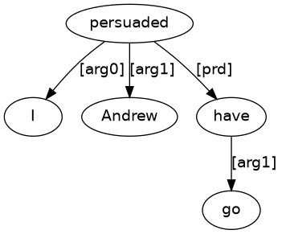
1.6 Tn object clause of Tt vs. Ti object clause of Tnt
Examples are from Binkert (1985).
- (1.38)
-
John[NPR] wants[VBP;~Tt] to[TO] visit[VB;~Tn] Mary[NPR] .[PUNC]
- (1.39)
-
- (1.40)
-
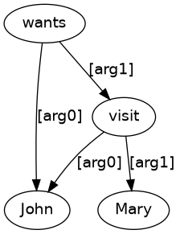
- (1.41)
-
John[NPR] wants[VBP;~Tnt] Mary[NPR] to[TO] visit[VB;~I] .[PUNC]
- (1.42)
-
- (1.43)
-
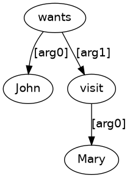
- (1.44)
-
Whom[WPRO] does[DOP] John[NPR] want[VB;~Tt] to[TO] visit[VB;~Tn] ?[PUNC]
- (1.45)
-
- (1.46)
-
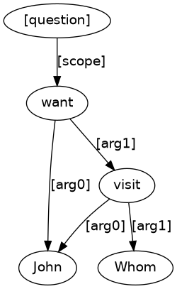
- (1.47)
-
Whom[WPRO] does[DOP] John[NPR] want[VB;~Tnt] to[TO] visit[VB;~I] ?[PUNC]
- (1.48)
-
- (1.49)
-
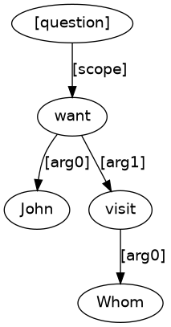
1.7 Object that clause vs. object noun phrase with relative clause
Examples are from Jespersen III p.165.
- (1.50)
-
I[PRO] know[VBP;~Tf] that[C] you[PRO] mentioned[VBD;~Tn] the[D] man[N] .[PUNC]
- (1.51)
-
- (1.52)
-
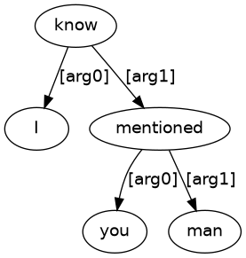
- (1.53)
-
I[PRO] know[VBP;~Tn] the[D] man[N] that[RPRO] you[PRO] mentioned[VBD;~Tn] .[PUNC]
- (1.54)
-
- (1.55)
-
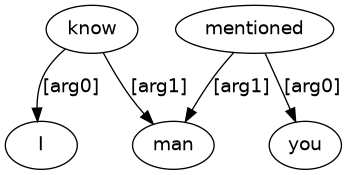
1.8 Object embedded question vs. object free relative
Examples of this section are adapted from Zandvoort (1969, p.165).
- (1.56)
-
He[PRO] asked[VBD;~Dn.w] me[PRO] what[WPRO] I[PRO] had[HVD;~cat_Ve] found[VVN;~Tn] .[PUNC]
- (1.57)
-
- (1.58)
-
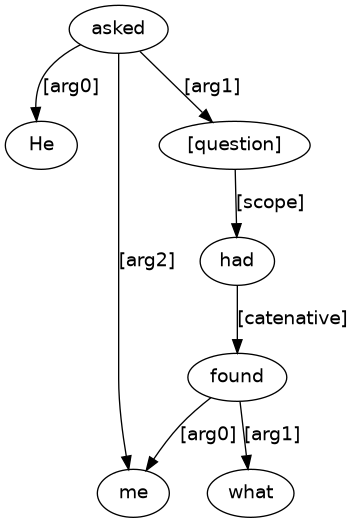
- (1.59)
-
I[PRO] gave[VBD;~Dn.n] him[PRO] _*_[N] what[RPRO] I[PRO] had[HVD;~cat_Ve] found[VVN;~Tn] .[PUNC]
- (1.60)
-
- (1.61)
-
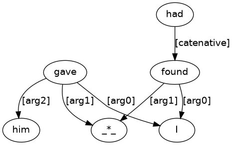
1.9 Catenative complement vs. object noun phrase with relative clause
Examples (1.62) and (1.65) are adapted from a quote of Anthony Trollope's in Jespersen Essentials p.332
- (1.62)
-
He[PRO] has[HVP;~cat_Vt] to[TO] tell[VB;~Tn] a[D] story[N] .[PUNC]
- (1.63)
-
- (1.64)
-
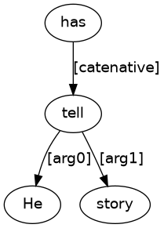
- (1.65)
-
He[PRO] has[HVP;~Tn] a[D] story[N] to[TO] tell[VB;~Tn] .[PUNC]
- (1.66)
-
- (1.67)
-
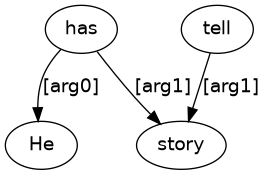
1.10 Existential verb with hidden passive catenative complement vs. existential verb with subject noun phrase with relative clause
- (1.68)
-
There[EX] are[BEP;~ex_cat_Vt_passive_] no[Q] kilts[NS] for[P-CONN] the[D] boys[NS] to[TO] wear[VB;~Tn] .[PUNC]
- (1.69)
-
- (1.70)
-
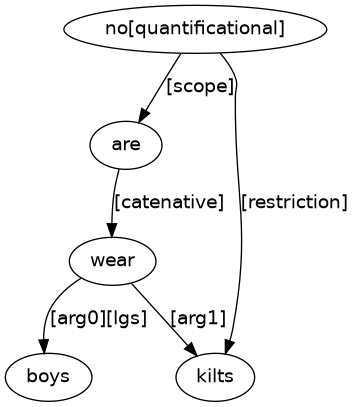
- (1.71)
-
There[EX] are[BEP;~ex_V] no[Q] kilts[NS] for[P-CONN] the[D] boys[NS] to[TO] wear[VB;~Tn] .[PUNC]
- (1.72)
-
- (1.73)
-
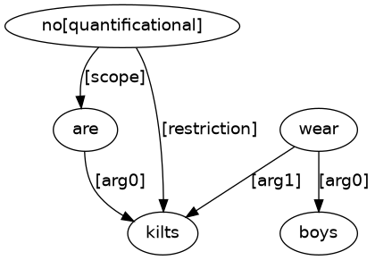
1.11 Object vs. subject as the relativised element
Examples are adapted from Jespersen Essentials p.335.
- (1.74)
-
I[PRO] need[VBP;~Tn] somebody[D;_nphd_] to[TO] love[VB;~Tn] .[PUNC]
- (1.75)
-
- (1.76)
-
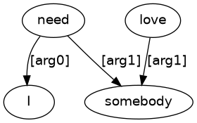
- (1.77)
-
I[PRO] need[VBP;~Tn] somebody[D;_nphd_] to[TO] love[VB;~Tn] me[PRO] .[PUNC]
- (1.78)
-
- (1.79)
-
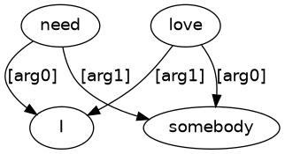
1.12 Object vs. subject as the relativised element vs. catenative complement
Examples are from Jespersen Essentials p.335.
- (1.80)
-
There[EX] is[BEP;~ex_V] only[Q] one[N] thing[N] to[TO] do[DO;~Tn] .[PUNC]
- (1.81)
-
- (1.82)
-
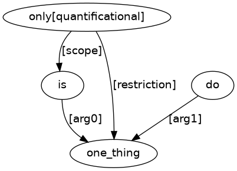
- (1.83)
-
There[EX] is[BEP;~ex_V] only[Q] one[N] thing[N] to[TO] be[BE;~cat_Ve_passive_] done[DON;~Tn] .[PUNC]
- (1.84)
-
- (1.85)
-
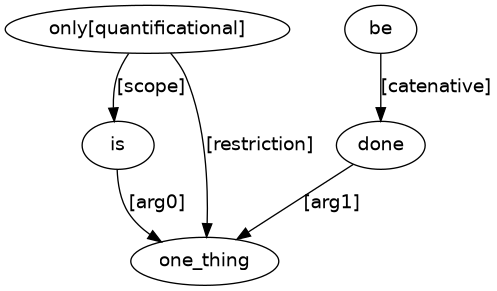
- (1.86)
-
There[EX] is[BEP;~ex_cat_Vt] only[Q] one[N] thing[N] to[TO] be[BE;~cat_Ve_passive_] done[DON;~Tn] .[PUNC]
- (1.87)
-
- (1.88)
-
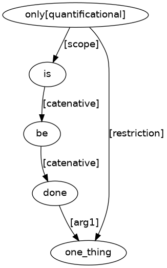
1.13 Relative clause vs. tough construction
- (1.89)
-
Knitting[N] and[CONJ] sewing[N] are[BEP;~Ln] not[NEG] very[ADV] difficult[ADJ] things[NS] to[TO] learn[VB;~Tn] .[PUNC]
- (1.90)
-
- (1.91)
-
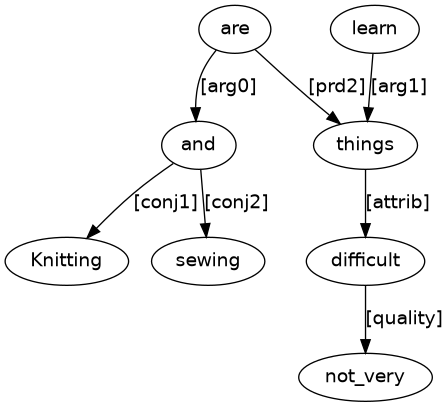
- (1.92)
-
Knitting[N] and[CONJ] sewing[N] are[BEP;~La] not[NEG] very[ADV] difficult[ADJ] to[TO] learn[VB;~Tn] .[PUNC]
- (1.93)
-
- (1.94)
-

1.14 Adverbial clause vs. object complement
- (1.95)
-
You[PRO] need[VBP;~Tn] wisdom[N] _*_[P-CONN] to[TO] understand[VB;~Tn] this[D;_nphd_] .[PUNC]
- (1.96)
-
- (1.97)
-
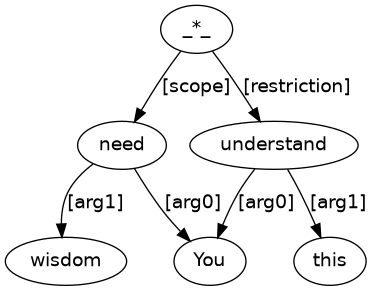
- (1.98)
-
I[PRO] need[VBP;~Tnt] people[N] to[TO] understand[VB;~Tn] this[D;_nphd_] .[PUNC]
- (1.99)
-
- (1.100)
-
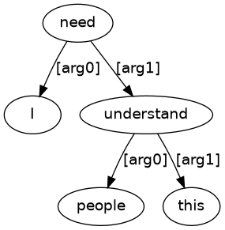
- (1.101)
-
He[PRO] tried[VBD;~cat_Vt] to[TO] understand[VB;~I] .[PUNC]
- (1.102)
-
- (1.103)
-
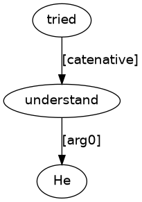
- (1.104)
-
He[PRO] studied[VBD;~I] _*_[P-CONN] to[TO] understand[VB;~I] .[PUNC]
- (1.105)
-
- (1.106)
-
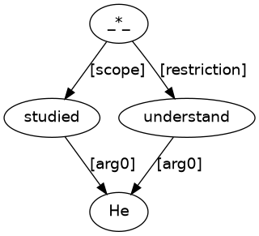